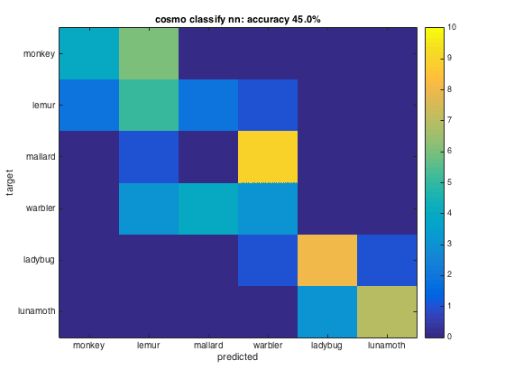
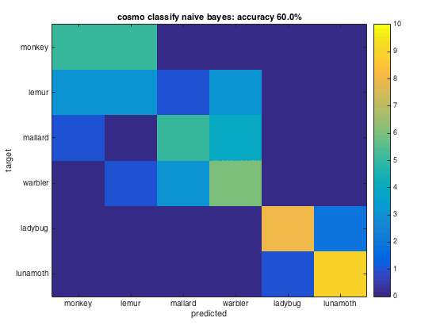
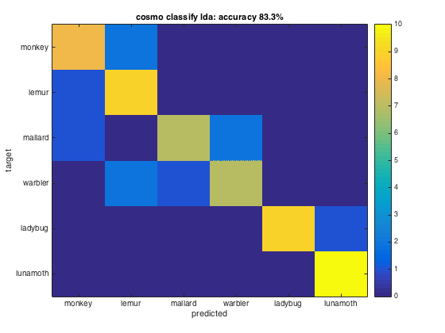
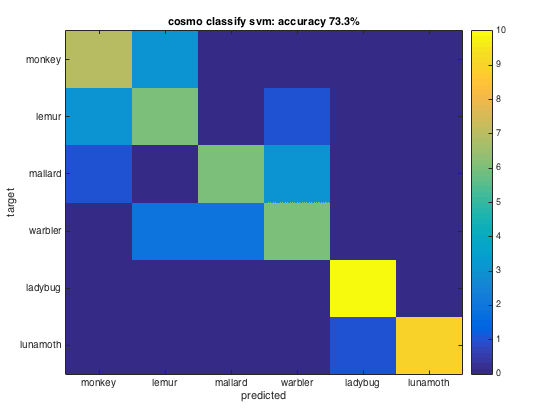

Cross validation measure example
This example runs cross validation with the cosmo_crossvalidation_measure function, using a classifier with n-fold crossvalidation. It shows the confusion matrices using multiple classifiers
- For CoSMoMVPA's copyright information and license terms, #
- see the COPYING file distributed with CoSMoMVPA. #
Contents
Define data
config=cosmo_config(); data_path=fullfile(config.tutorial_data_path,'ak6','s01'); data_fn=fullfile(data_path,'glm_T_stats_perrun.nii'); mask_fn=fullfile(data_path,'vt_mask.nii'); ds=cosmo_fmri_dataset(data_fn,'mask',mask_fn,... 'targets',repmat(1:6,1,10),... 'chunks',floor(((1:60)-1)/6)+1); % remove constant features (due to liberal masking) ds=cosmo_remove_useless_data(ds);
Part 1: Use single classifier
% Assign a function handle to the cosmo_crossvalidation_measure % function to the variable 'measure' % Hint: a function handle is a reference to a function. A function % handle to the function named 'foo' is expressed by: @foo % For more information, run: help function_handle % >@@> measure=@cosmo_crossvalidation_measure; % <@@< % Make a struct containing the arguments for the measure: % - classifier: a function handle to cosmo_classify_lda % - partitions: the output of cosmo_nfold_partitioner applied to the % dataset % Assign the struct to the variable 'args' % >@@> args=struct(); args.classifier=@cosmo_classify_lda; args.partitions=cosmo_nfold_partitioner(ds); % <@@< fprintf('Using the following measure:\n'); cosmo_disp(measure,'strlen',Inf); % avoid string truncation fprintf('\nUsing the following measure arguments:\n'); cosmo_disp(args); % Apply the measure to ds, with args as second argument. Assign the result % to the variable 'ds_accuracy'. % >@@> ds_accuracy=measure(ds,args); % <@@< % Show the result fprintf('\nOutput dataset (with classification accuracy)\n'); % Show the contents of 'ds_accuracy' using 'cosmo_disp' % >@@> cosmo_disp(ds_accuracy); % <@@<
Using the following measure:
@cosmo_crossvalidation_measure
Using the following measure arguments:
.classifier
@cosmo_classify_lda
.partitions
.train_indices
{ [ 7 [ 1 [ 1 ... [ 1 [ 1 [ 1
8 2 2 2 2 2
9 3 3 3 3 3
: : : : : :
58 58 58 58 58 52
59 59 59 59 59 53
60 ]@54x1 60 ]@54x1 60 ]@54x1 60 ]@54x1 60 ]@54x1 54 ]@54x1 }@1x10
.test_indices
{ [ 1 [ 7 [ 13 ... [ 43 [ 49 [ 55
2 8 14 44 50 56
3 9 15 45 51 57
4 10 16 46 52 58
5 11 17 47 53 59
6 ] 12 ] 18 ] 48 ] 54 ] 60 ] }@1x10
Output dataset (with classification accuracy)
.samples
[ 0.833 ]
.sa
.labels
{ 'accuracy' }
%% Part 2: Compare multiple classifiers
% This exercise shows how multiple classifiers can be run on the same % data. % As a cell can contain data of any type, it also supports storage of % function handles. The syntax is the same as for other types; to put % handles to the functions named 'foo','bar' and 'baz' in a cell, % use {@foo, @bar, @baz} % % For this exercise, put function handles to cosmo_classify_nn, % cosmo_classify_naive_bayes and cosmo_classify_lda in a cell, % and assign the result to a variable % named 'classifiers' % (if the SVM classifier is present, it can also be put in this cell) % >@@> classifiers={@cosmo_classify_nn,... @cosmo_classify_naive_bayes,... @cosmo_classify_lda}; % if svm classifier is present (either libsvm or matlab's svm), use that % too. The solution presented here is system-independent because it is % checked first that an svm classifier is present if cosmo_check_external('svm',false) classifiers{end+1}=@cosmo_classify_svm; end % <@@< % Print which classifiers are used nclassifiers=numel(classifiers); classifier_names=cellfun(@func2str,classifiers,'UniformOutput',false); fprintf('\n\nUsing %d classifiers: %s\n', nclassifiers, ... cosmo_strjoin(classifier_names, ', ')); % Set the measure (again) to a function handle to % cosmo_crossvalidation_measure, and assign the result to a variable named % 'measure' % >@@> measure=@cosmo_crossvalidation_measure; % <@@< % Make a struct containing the arguments for the measure: % - partitions: the output of cosmo_nfold_partitioner applied to the % - output: set to 'predictions' to get the predictions from the % classifier % (without the 'output' field the output defaults to % classification accuracy) % (Below, in the for-loop, the field 'classifier' is set for each function % handle in the cell 'classifiers') % >@@> args=struct(); args.partitions=cosmo_nfold_partitioner(ds); args.output='predictions'; % <@@<
Using 4 classifiers: cosmo_classify_nn, cosmo_classify_naive_bayes, cosmo_classify_lda, cosmo_classify_svm
Run classifications
Compute the accuracy and predictions for each classifier, and plot the confusion matrix
for k=1:nclassifiers % Set the classifier function here: % assign args.classifier to the k-th classifier in the cell % 'classifiers'. % >@@> args.classifier=classifiers{k}; % <@@< % compute predictions using the measure, and assign the result to a % variable 'predicted_ds'. % >@@> predicted_ds=measure(ds,args); % <@@< % compute confusion matrix using cosmo_confusion_matrix, and assign the % result to a variable 'confusion_matrix'. % >@@> confusion_matrix=cosmo_confusion_matrix(predicted_ds); % <@@< % compute accuracy, and store the result in a variable called % 'accuracy' % >@@> sum_diag=sum(diag(confusion_matrix)); sum_total=sum(confusion_matrix(:)); accuracy=sum_diag/sum_total; % alternative: accuracy_alt=mean(predicted_ds.samples==predicted_ds.sa.targets); % <@@< % visualize confusion matrix and show classification accuracy in the % title figure(); imagesc(confusion_matrix,[0 10]) classifier_name=strrep(classifier_names{k},'_',' '); % no underscores desc=sprintf('%s: accuracy %.1f%%', classifier_name, accuracy*100); title(desc) classes = {'monkey','lemur','mallard','warbler','ladybug','lunamoth'}; nclasses=numel(classes); set(gca,'XTick',1:nclasses,'XTickLabel',classes); set(gca,'YTick',1:nclasses,'YTickLabel',classes); ylabel('target'); xlabel('predicted'); colorbar % print classificationa accuracy in terminal window fprintf('%s\n',desc); end % Note: poor performance by some classifiers does not mean that they are % useless, just that they were unable to capture the distinctions between % the patterns of different conditions because these distinctions were not % captured by the classifier's model.
Warning: Output option 'predictions' is deprecated and will be removed from a
future release. Please use output='winner_predictions' instead, or use
output='fold_predictions' to get predictions for each fold
This warning is shown only once, but the underlying issue may occur multiple
times. To show each warning:
- every time: cosmo_warning('on')
- once: cosmo_warning('once')
- never: cosmo_warning('off')
cosmo classify nn: accuracy 45.0%
cosmo classify naive bayes: accuracy 60.0%
cosmo classify lda: accuracy 83.3%
cosmo classify svm: accuracy 73.3%
   